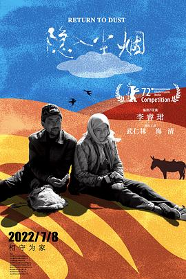

隐入尘烟
又名：Return to Dust
选取的视角很独特，同时艺术指导很喜欢。
作品信息
| 导演 | 李睿珺 |
| 编剧 | 李睿珺 |
| 主演 | 武仁林 / 海清 / 杨光锐 / 赵登平 / 王彩兰 / 曾建贵 / 武赟志 / 马占红 / 王翠兰 / 续彩霞 / 李生甫 / 张敏 |
| 类型 | 剧情 |
| 制片国家/地区 | 中国大陆 |
| 语言 | 甘肃方言 / 汉语普通话 |
| 上映日期 | 2022-07-08(中国大陆) / 2022-02-13(柏林电影节) |
| 片长 | 133分钟 / 131分钟(柏林电影节) |
| IMDb | tt17097088 |
说过什么
2022-09-09 22:46:25
广播 · 看过 · ★★★★★
选取的视角很独特，同时艺术指导很喜欢。
最后一次看到是 2026-10-07T23:14:01+08:00 · 豆瓣原页